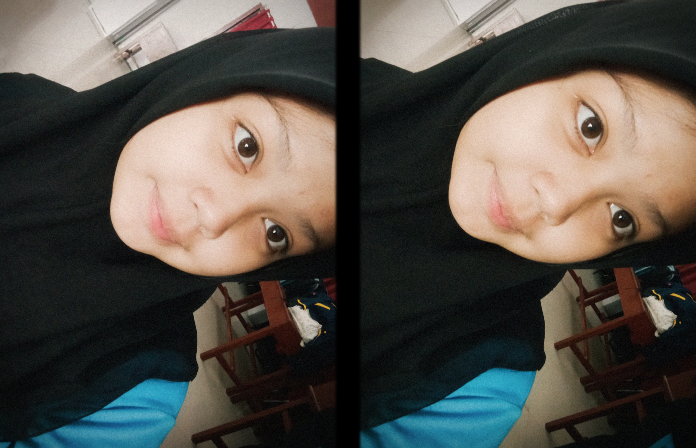
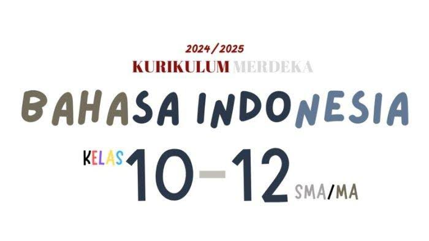

Data Diri

Hello Prensss !!!!
Nah guys saya sekarang berumur 15 tahun, saya duduk di bangku smk kelas 2 jurusan rekayasa perangkat luanak.
saya adala anak pertama dri 3 bersaudara, saya lahir pada tanggal 5 januari 2009 tepat dihari jumat dan jam 10.00
Hobi
Memasak
Hobi saya adalah memasak. Kenapa saya suka memasak? Entahlah, mungkin karena saya suka berada di dapur dan banyak melihat resep makanan di TikTok. Meskipun kadang berhasil, kadang tidak, tetap saja seru!
Jalan-Jalan
Selain memasak, saya juga suka jalan-jalan. Bahkan, saya suka jalan tanpa tujuan yang penting keluar rumah. Hobi saya memang suka berkeliling, hehe.
Makanan Favorit
Dimsum
Makanan favorit saya adalah dimsum. Serius, ini enak banget, apalagi dengan saus pedas yang membuat mood saya langsung naik.
Mapel Favorit
Bahasa Indonesia

Mapel favorit saya adalah Bahasa Indonesia, karena menurut saya pelajaran ini sangat menarik dan memberikan banyak wawasan. Selain itu, suasananya juga santai dan tidak terlalu menegangkan. Tugas akhirnya pun tidak selalu keluar, jadi seru deh!